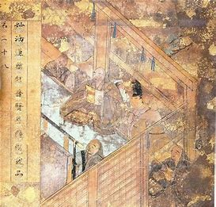
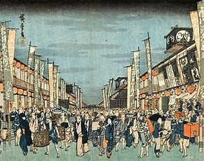

역사

야마토 시대는 일본의 역사에서 중요한 전환기를 맞이한 시기로, 정치적 통합, 문화적 발전, 사회적 제도의 정비 등이 이루어진 시기입니다. 이 시기는 야마토 왕국의 성립과 발전, 불교의 전파, 그리고 율령 제도의 도입 등을 통해 일본의 근본적인 국가 체제와 문화적 기초가 다져진 시기였습니다. 이후의 나라 시대로의 전환은 일본의 역사적 발전을 위한 중요한 기초가 되었으며, 현대 일본의 기초를 마련하는 계기가 되었습니다.
상세보기

에도 시대는 일본 역사에서 평화와 안정의 시대를 대표하는 시기입니다. 도쿠가와 이예야스의 막부 통치 아래에서 사회는 체계적으로 정비되었고, 경제는 성장했으며, 문화는 큰 발전을 이루었습니다. 그러나 외부의 압력과 내부의 갈등이 쌓여 가며 결국 메이지 유신이라는 대변혁을 초래하게 되었고, 이로써 일본은 근대 국가로서의 새로운 출발을 하게 되었습니다.
상세보기
일본의 근대 시대는 메이지 유신의 시작으로부터 제2차 세계 대전의 종전까지, 일본이 근대 국가로서의 정체성을 확립하고 국제 사회에서 중요한 역할을 수행하게 되는 과정을 담고 있습니다. 이 시기는 정치적 개혁, 경제적 발전, 사회적 변화, 문화적 성장의 복합적인 요소들이 어우러진 시기로, 현대 일본의 기초를 다진 중요한 시기였습니다
상세보기